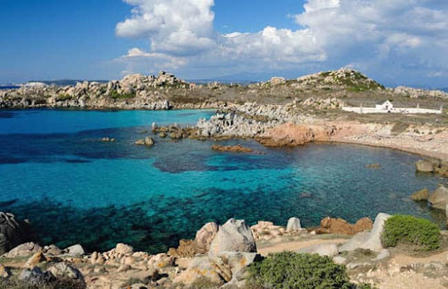

<!DOCTYPE html>
<html>
    <head>
        <meta charset="UTF-8"/>
        <title>Atividade</title>
    </head>
    <body background="design.jpg" bgproperties="fixe" >

    </body>
    <body>
        <center>
        <font face="ELEPHANT" size='7' color='bc8034'>
             5<br/>Lugares</br>que eu gostaria de conhecer
            </font>
        </center>
        <center><font face='VIVALDI' size='5' color='ffba08'>por Raul Furtado</font></center>
        <br/><br/><br/><br/>
    
        <center><font face='PERPETUA TITLING MT' size='6' color='8c7a6b'>Ilhas Lavezzi, França</font></center>
        <center>
        </center>
        <font face='PERPETUA TITLING MT' size='6' color='bc8034'>
        <center><p>BREVE DESCRIÇÃO:<br/></center>
        
        <center>As ilhas Lavezzi são um grupo de ilhas no mar Mediterrâneo,<br/> </center>
            <center>composto por cerca de uma centena de pequenos ilhéus graníticos no estreito de Bonifácio, <br/></center>
                <center>entre a Córsega e a Sardenha,<br/></center>
                    <center>a cerca de 10 km a sul da cidade francesa de Bonifacio.<br/></center>
                </p>
           
        
        <center><a href="terceirapag.html">PROXIMO LUGAR!</a></center>
        </font>
       


         
    </body>

</html>